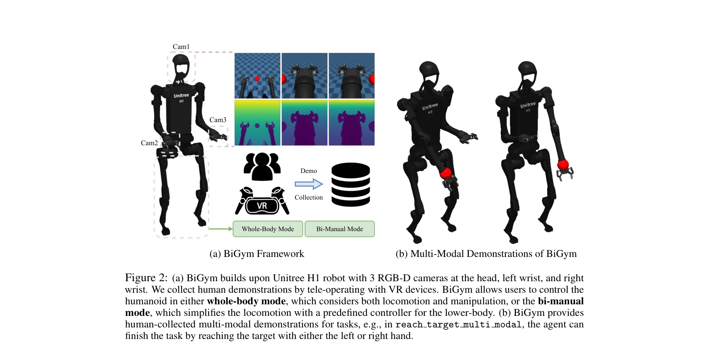

Essence

Figure 1: BiGym focuses on mobile manipulation with home assistance humanoids. We provide 40
BiGym은 인간이 수집한 데모를 포함한 40개의 다양한 이족 이족 조작 작업을 제공하는 모바일 휴머노이드 로봇 학습 벤치마크로, Imitation Learning과 Demo-Driven RL 알고리즘을 평가할 수 있게 설계되었다.
저자: Nikita Chernyadev, Nicholas Backshall, Xiao Ma, Yunfan Lu, Younggyo Seo, Stephen James | 날짜: 2024-07-10 | URL: https://arxiv.org/abs/2407.07788
Figure 1: BiGym focuses on mobile manipulation with home assistance humanoids. We provide 40
BiGym은 인간이 수집한 데모를 포함한 40개의 다양한 이족 이족 조작 작업을 제공하는 모바일 휴머노이드 로봇 학습 벤치마크로, Imitation Learning과 Demo-Driven RL 알고리즘을 평가할 수 있게 설계되었다.
Figure 1: BiGym focuses on mobile manipulation with home assistance humanoids. We provide 40

Figure 2: (a) BiGym builds upon Unitree H1 robot with 3 RGB-D cameras at the head, left wrist, and right
총평: BiGym은 인간이 수집한 현실적 다중양식 데모와 모바일 이족 조작의 복잡성을 체계적으로 다루는 최초의 종합 벤치마크로, Imitation Learning과 Demo-Driven RL 연구에 중요한 기여를 한다. 다만 실제 로봇 검증과 환경 다양성 확대가 향후 영향력 확대를 위해 필요하다.